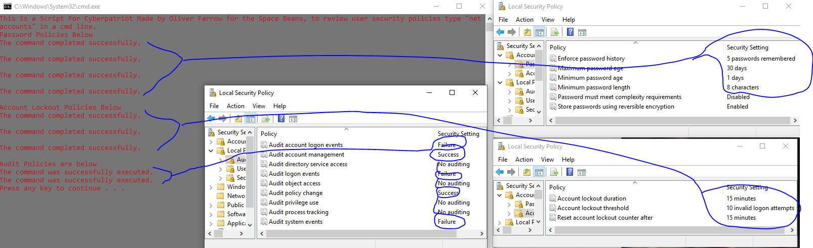

Using @echo off to reduce clutter
Using "color (insert two numbers between 0-9)" to change the scripts color
Using pause to force the user to input a character before closing the script
How to comment either in the terminal or in the code with "REM" or "echo"
As I wrote my scripts I was able to change all Account Lockout Policies, almost all password policies, and some audit policiesThe script I used acted as such, its code is underneath the image.
@echo off color 84 echo This is a Script For Cyberpatriot Made by Oliver Farrow for the Space Beans, to review user security policies type "net accounts" in a cmd line. echo Password Policies Below net accounts /uniquepw:5 net accounts /maxpwage:30 net accounts /minpwage:1 net accounts /minpwlen:8 echo Account Lockout Policies Below net accounts /lockoutduration:15 net accounts /lockoutthreshold:10 net accounts /lockoutwindow:15 echo Audit Policies are below auditpol /set /category:"Account Management","Policy Change" /success:enable auditpol /set /category:"System","Account Logon","Logon/Logoff" /failure:enable pause